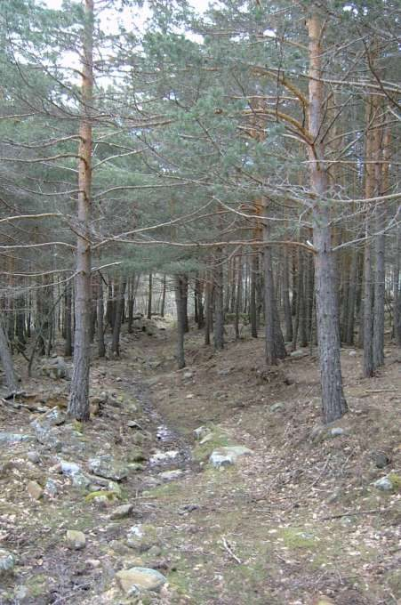
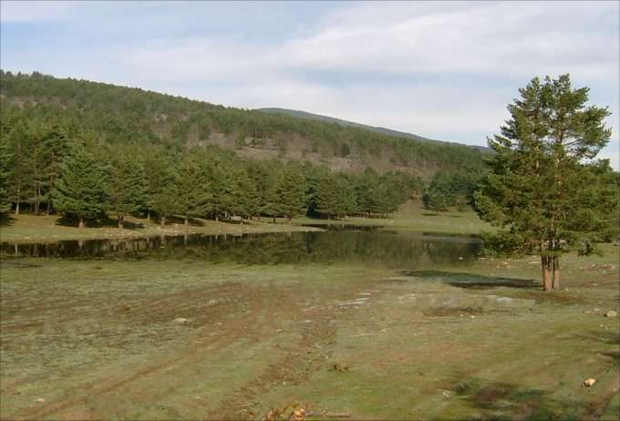

Laguna La Nava
Villoslada de Cameros · comarca del Iregua
- Distancia6,2 kmida y vuelta
- Desnivel204 m
- Tiempo orientativo2 h
- Dificultadbaja
- Época recomendadatodas, pero mejor en el deshielo
- Terrenosenda
A pesar de su claro rastro sobre el mapa esta laguna permanece “oculta” prácticamente durante todo el año. Son escasas las semanas en que el agua procedente del deshielo utiliza la vaguada de La Nava como depósito para formar esta hermosa laguna. Pero, lo cierto, es que cuando está llena, de verdad, impresiona. El paseo propuesto en esta ocasión coincide con un pequeño tramo de la llamada “Vía Romana del Iregua”, que actualmente se une la localidad de Viguera con el Puerto de Piqueras mediante cinco tramos perfectamente balizados.


Recorrido
Salimos de Villoslada por un camino asfaltado junto a la Ermita de San Roque. Enseguida, en una cerrada curva del camino, tomamos un sendero que continua recto y se adentra en el pinar. El sendero se encuentra perfectamente señalizado mediante marcas de pintura, por lo que no tendremos ninguna dificultad en llegar hasta la Laguna La Nava; otra cosa será que “ella” se deje ver.


{kind=link}
{kind=link}